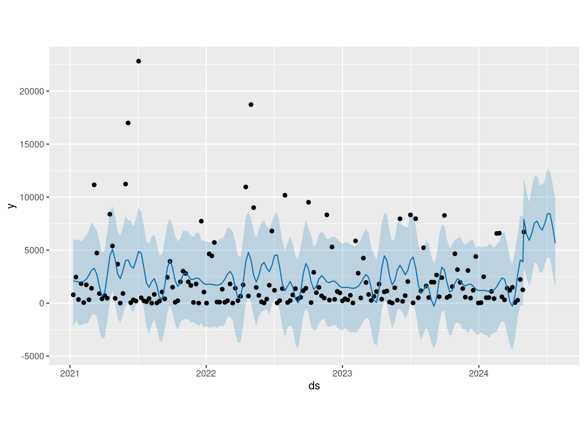
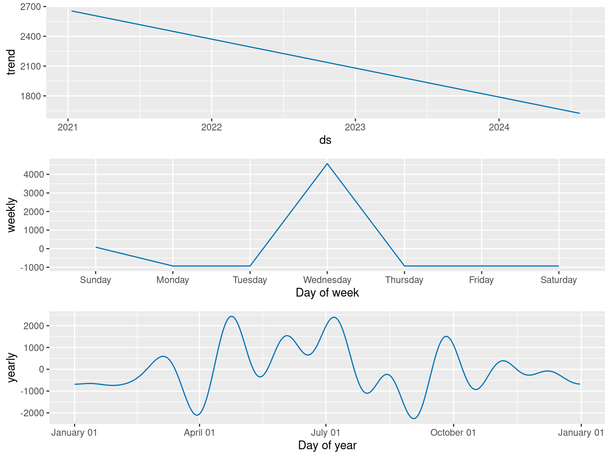
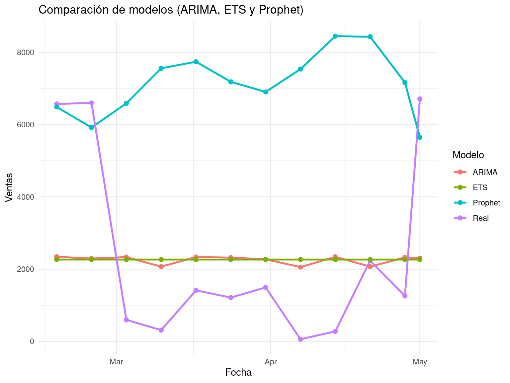
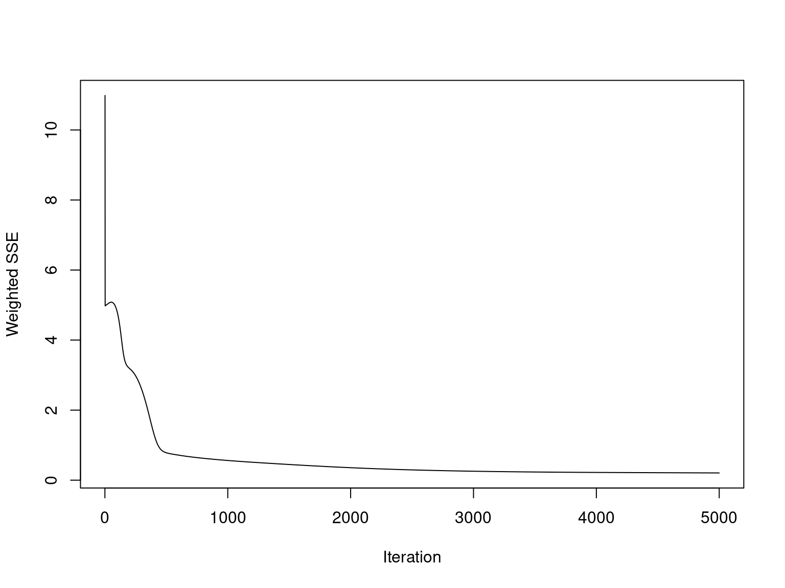
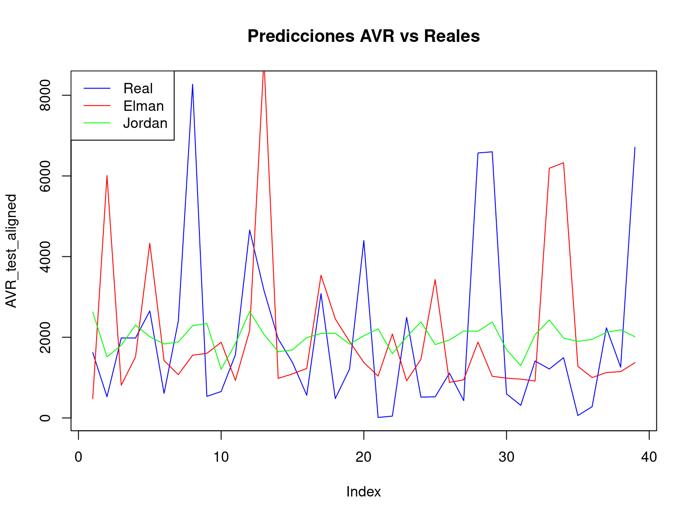

Actividad 6 Regresión en series de tiempo
6.1 ETS AVR
# Ajustar el modelo ETS automáticamente
ETS_AVR <- ets(AVR_ts)
# Predicción para las próximas 52 semanas (1 año)
prediccion_ETS_AVR <- forecast(ETS_AVR, h = 12)
# Ver resultados
print(prediccion_ETS_AVR) Point Forecast Lo 80 Hi 80 Lo 95 Hi 95
2024.365 2265.12 -2176.596 6706.837 -4527.899 9058.139
2024.385 2265.12 -2176.596 6706.837 -4527.899 9058.139
2024.404 2265.12 -2176.596 6706.837 -4527.899 9058.139
2024.423 2265.12 -2176.596 6706.837 -4527.899 9058.140
2024.442 2265.12 -2176.596 6706.837 -4527.899 9058.140
2024.462 2265.12 -2176.596 6706.837 -4527.899 9058.140
2024.481 2265.12 -2176.596 6706.837 -4527.899 9058.140
2024.500 2265.12 -2176.596 6706.837 -4527.899 9058.140
2024.519 2265.12 -2176.596 6706.837 -4527.899 9058.140
2024.538 2265.12 -2176.596 6706.837 -4527.899 9058.140
2024.558 2265.12 -2176.596 6706.837 -4527.899 9058.140
2024.577 2265.12 -2176.596 6706.837 -4527.899 9058.140
6.2 Prophet AVR
# Preparar los datos para Prophet
prophet_AVR <- AVR %>%
select(Fecha, Total_AVR) %>%
rename(ds = Fecha, y = Total_AVR) # Prophet requiere las columnas 'ds' y 'y'
prophet_AVR$ds <- as.Date(prophet_AVR$ds) # Asegurar formato de fecha
# Ajustar el modelo Prophet habilitando la estacionalidad diaria
prophet_model_AVR <- prophet(
prophet_AVR,
daily.seasonality = FALSE # No incluir estacionalidad diaria
)
# Crear un marco de tiempo futuro para las próximas 12 períodos (semanas)
future_AVR <- make_future_dataframe(prophet_model_AVR, periods = 12, freq = "week")
# Realizar las predicciones
forecast_prophet_AVR <- predict(prophet_model_AVR, future_AVR)
# Ver resultados
print(tail(forecast_prophet_AVR, 12)) # Últimas 12 predicciones ds trend additive_terms additive_terms_lower
175 2024-05-08 1685.811 4800.583 4800.583
176 2024-05-15 1680.219 4236.907 4236.907
177 2024-05-22 1674.628 4913.432 4913.432
178 2024-05-29 1669.036 5886.749 5886.749
179 2024-06-05 1663.445 6075.058 6075.058
180 2024-06-12 1657.853 5524.007 5524.007
181 2024-06-19 1652.262 5250.316 5250.316
182 2024-06-26 1646.671 5887.626 5887.626
183 2024-07-03 1641.079 6804.259 6804.259
184 2024-07-10 1635.488 6794.498 6794.498
185 2024-07-17 1629.896 5531.485 5531.485
186 2024-07-24 1624.305 4021.673 4021.673
additive_terms_upper weekly weekly_lower weekly_upper yearly
175 4800.583 4581.225 4581.225 4581.225 219.3586
176 4236.907 4581.225 4581.225 4581.225 -344.3181
177 4913.432 4581.225 4581.225 4581.225 332.2076
178 5886.749 4581.225 4581.225 4581.225 1305.5242
179 6075.058 4581.225 4581.225 4581.225 1493.8330
180 5524.007 4581.225 4581.225 4581.225 942.7822
181 5250.316 4581.225 4581.225 4581.225 669.0908
182 5887.626 4581.225 4581.225 4581.225 1306.4016
183 6804.259 4581.225 4581.225 4581.225 2223.0338
184 6794.498 4581.225 4581.225 4581.225 2213.2727
185 5531.485 4581.225 4581.225 4581.225 950.2603
186 4021.673 4581.225 4581.225 4581.225 -559.5515
yearly_lower yearly_upper multiplicative_terms multiplicative_terms_lower
175 219.3586 219.3586 0 0
176 -344.3181 -344.3181 0 0
177 332.2076 332.2076 0 0
178 1305.5242 1305.5242 0 0
179 1493.8330 1493.8330 0 0
180 942.7822 942.7822 0 0
181 669.0908 669.0908 0 0
182 1306.4016 1306.4016 0 0
183 2223.0338 2223.0338 0 0
184 2213.2727 2213.2727 0 0
185 950.2603 950.2603 0 0
186 -559.5515 -559.5515 0 0
multiplicative_terms_upper yhat_lower yhat_upper trend_lower trend_upper
175 0 2540.713 10594.639 1685.811 1685.811
176 0 1940.049 9766.620 1680.219 1680.219
177 0 2491.404 10739.469 1674.628 1674.628
178 0 3179.193 11736.993 1669.036 1669.037
179 0 3660.674 11887.475 1663.444 1663.446
180 0 2762.775 11614.613 1657.853 1657.854
181 0 2724.193 11009.974 1652.261 1652.263
182 0 3157.365 11561.141 1646.669 1646.672
183 0 4458.555 12048.725 1641.077 1641.081
184 0 4446.196 12676.329 1635.486 1635.490
185 0 3124.870 11102.653 1629.894 1629.899
186 0 1464.998 9727.109 1624.302 1624.308
yhat
175 6486.394
176 5917.126
177 6588.060
178 7555.785
179 7738.503
180 7181.861
181 6902.578
182 7534.297
183 8445.338
184 8429.985
185 7161.381
186 5645.978

6.2.1 Comparar modelos
# Supongamos que tienes el siguiente:
# Valores reales
real_values <- AVR_ts[(length(AVR_ts) - 11):length(AVR_ts)] # Últimos 12 valores como prueba
# Predicciones
arima_preds <- prediccion_ARIMA_AVR$mean # Predicciones de ARIMA
ets_preds <- prediccion_ETS_AVR$mean # Predicciones de ETS
prophet_preds <- tail(forecast_prophet_AVR$yhat, 12) # Predicciones de Prophet
# Calcular métricas para ARIMA
mae_arima <- mae(real_values, arima_preds)
rmse_arima <- rmse(real_values, arima_preds)
mape_arima <- mape(real_values, arima_preds)
# Calcular métricas para ETS
mae_ets <- mae(real_values, ets_preds)
rmse_ets <- rmse(real_values, ets_preds)
mape_ets <- mape(real_values, ets_preds)
# Calcular métricas para Prophet
mae_prophet <- mae(real_values, prophet_preds)
rmse_prophet <- rmse(real_values, prophet_preds)
mape_prophet <- mape(real_values, prophet_preds)
# Crear la tabla de resultados
results_table <- data.frame(
Model = c("ARIMA", "ETS", "Prophet"),
MAE = c(mae_arima, mae_ets, mae_prophet),
RMSE = c(rmse_arima, rmse_ets, rmse_prophet),
MAPE = c(mape_arima, mape_ets, mape_prophet)
)
# Mostrar la tabla
print(results_table) Model MAE RMSE MAPE
1 ARIMA 2044.422 2483.923 4.515627
2 ETS 2050.977 2515.275 4.811419
3 Prophet 5042.441 5705.956 17.3319766.2.2 Análisis por modelo
6.2.2.1 ARIMA
MAE: 2044.422 RMSE: 2483.923 MAPE: 4.52%
ARIMA tiene el mejor rendimiento general:
Error absoluto bajo (MAE): Indica que en promedio, las predicciones están a ±2044.42 unidades de los valores reales.
RMSE bajo: Indica que penaliza menos los errores grandes en comparación con los otros modelos.
MAPE más bajo: Con un 4.52%, ARIMA ofrece predicciones muy cercanas a los valores reales en términos porcentuales.
6.2.2.2 ETS
MAE: 2050.977 RMSE: 2515.275 MAPE: 4.81%
ETS está muy cerca de ARIMA:
Su MAE y RMSE son ligeramente superiores a los de ARIMA, lo que sugiere que este modelo es casi tan preciso como ARIMA pero menos eficiente con errores grandes.
Su MAPE también es un poco más alto (4.81%), lo que indica un rendimiento porcentual ligeramente inferior.
6.2.2.3 Prophet
MAE: 5042.440 RMSE: 5705.955 MAPE: 17.33%
Prophet tiene el peor rendimiento entre los modelos:
MAE y RMSE altos: Sus errores absolutos y cuadrados son significativamente más altos, lo que indica un mal ajuste general.
MAPE muy alto (17.33%): Sus predicciones están mucho más lejos de los valores reales en términos porcentuales.
# Crear un data.frame con valores reales y predicciones
comparison_data <- data.frame(
Fecha = AVR$Fecha[(length(AVR$Fecha) - 11):length(AVR$Fecha)], # Últimas 12 fechas
Real = AVR$Total[(length(AVR$Total) - 11):length(AVR$Total)], # Valores reales
ARIMA = as.numeric(prediccion_ARIMA_AVR$mean), # Predicciones ARIMA
ETS = as.numeric(prediccion_ETS_AVR$mean), # Predicciones ETS
Prophet = tail(forecast_prophet_AVR$yhat, 12) # Predicciones Prophet
)
# Convertir los datos a formato largo para usar ggplot2
comparison_data_long <- tidyr::pivot_longer(
comparison_data,
cols = c("Real", "ARIMA", "ETS", "Prophet"),
names_to = "Modelo",
values_to = "Ventas"
)
# Graficar las predicciones y valores reales
ggplot(comparison_data_long, aes(x = Fecha, y = Ventas, color = Modelo, group = Modelo)) +
geom_line(size = 1) +
geom_point(size = 2) +
labs(
title = "Comparación de modelos (ARIMA, ETS y Prophet)",
x = "Fecha",
y = "Ventas",
color = "Modelo"
) +
theme_minimal()
6.2.3 Conclusión
Mejor modelo: ARIMA es el mejor modelo en términos absolutos (MAE, RMSE) y relativos (MAPE). Sus predicciones son más consistentes y cercanas a los valores reales.
ETS es una alternativa razonable si no puedes usar ARIMA, ya que ofrece un rendimiento muy similar.
Prophet tiene un rendimiento significativamente inferior en este caso, con mayores errores absolutos y porcentuales. Esto podría deberse a que Prophet no está bien adaptado a los patrones específicos de estos datos.
6.3 ETS LINE UPS
# Ajustar ETS sin estacionalidad
ETS_Line_UPS <- ets(Line_UPS_ts, model = "ZZN") # Sin componente estacional
# Predicción para los próximos 12 períodos
forecast_ETS_Line_UPS <- forecast(ETS_Line_UPS, h = 12)
# Graficar los resultados
plot(forecast_ETS_Line_UPS)
# Preparar los datos para Prophet
prophet_Line_UPS <- Line_UPS %>%
select(Fecha, Total_Line_UPS) %>%
rename(ds = Fecha, y = Total_Line_UPS) # Prophet requiere las columnas 'ds' y 'y'
prophet_Line_UPS$ds <- as.Date(prophet_Line_UPS$ds) # Asegurar formato de fecha
# Ajustar el modelo Prophet habilitando la estacionalidad diaria
prophet_model_Line_UPS <- prophet(
prophet_Line_UPS,
daily.seasonality = FALSE # No incluir estacionalidad diaria
)
# Crear un marco de tiempo futuro para las próximas 12 períodos (semanas)
future_Line_UPS <- make_future_dataframe(prophet_model_Line_UPS, periods = 12, freq = "week")
# Realizar las predicciones
forecast_prophet_Line_UPS <- predict(prophet_model_Line_UPS, future_Line_UPS)
# Ver resultados
print(tail(forecast_prophet_Line_UPS, 12)) # Últimas 12 predicciones ds trend additive_terms additive_terms_lower
175 2024-05-08 3340.160 3243.251 3243.251
176 2024-05-15 3337.790 2195.109 2195.109
177 2024-05-22 3335.421 1654.125 1654.125
178 2024-05-29 3333.052 2014.432 2014.432
179 2024-06-05 3330.683 2781.616 2781.616
180 2024-06-12 3328.313 3144.714 3144.714
181 2024-06-19 3325.944 2818.844 2818.844
182 2024-06-26 3323.575 2260.955 2260.955
183 2024-07-03 3321.206 2111.021 2111.021
184 2024-07-10 3318.836 2530.450 2530.450
185 2024-07-17 3316.467 3113.209 3113.209
186 2024-07-24 3314.098 3354.653 3354.653
additive_terms_upper weekly weekly_lower weekly_upper yearly
175 3243.251 3016.747 3016.747 3016.747 226.50368
176 2195.109 3016.747 3016.747 3016.747 -821.63881
177 1654.125 3016.747 3016.747 3016.747 -1362.62212
178 2014.432 3016.747 3016.747 3016.747 -1002.31500
179 2781.616 3016.747 3016.747 3016.747 -235.13095
180 3144.714 3016.747 3016.747 3016.747 127.96683
181 2818.844 3016.747 3016.747 3016.747 -197.90375
182 2260.955 3016.747 3016.747 3016.747 -755.79282
183 2111.021 3016.747 3016.747 3016.747 -905.72665
184 2530.450 3016.747 3016.747 3016.747 -486.29758
185 3113.209 3016.747 3016.747 3016.747 96.46131
186 3354.653 3016.747 3016.747 3016.747 337.90610
yearly_lower yearly_upper multiplicative_terms multiplicative_terms_lower
175 226.50368 226.50368 0 0
176 -821.63881 -821.63881 0 0
177 -1362.62212 -1362.62212 0 0
178 -1002.31500 -1002.31500 0 0
179 -235.13095 -235.13095 0 0
180 127.96683 127.96683 0 0
181 -197.90375 -197.90375 0 0
182 -755.79282 -755.79282 0 0
183 -905.72665 -905.72665 0 0
184 -486.29758 -486.29758 0 0
185 96.46131 96.46131 0 0
186 337.90610 337.90610 0 0
multiplicative_terms_upper yhat_lower yhat_upper trend_lower trend_upper
175 0 3397.146 9473.469 3340.160 3340.160
176 0 2615.576 8462.992 3337.782 3337.799
177 0 2003.053 7995.120 3335.392 3335.449
178 0 2425.406 8528.854 3332.999 3333.108
179 0 2910.064 9167.904 3330.593 3330.780
180 0 3416.442 9500.180 3328.186 3328.452
181 0 3173.707 9120.850 3325.777 3326.138
182 0 2589.513 8485.394 3323.358 3323.816
183 0 2349.045 8310.798 3320.946 3321.500
184 0 2677.804 8813.358 3318.522 3319.177
185 0 3485.498 9539.926 3316.101 3316.856
186 0 3725.710 9689.884 3313.671 3314.543
yhat
175 6583.411
176 5532.899
177 4989.546
178 5347.484
179 6112.299
180 6473.028
181 6144.788
182 5584.529
183 5432.226
184 5849.286
185 6429.676
186 6668.751
6.3.1 Comparar modelos Line UPS
# Supongamos que tienes el siguiente:
# Valores reales
real_values <- Line_UPS_ts[(length(Line_UPS_ts) - 11):length(Line_UPS_ts)] # Últimos 12 valores como prueba
# Predicciones
arima_preds <- prediccion_ARIMA_Line_UPS$mean # Predicciones de ARIMA
ets_preds <- forecast_ETS_Line_UPS$mean # Predicciones de ETS
prophet_preds <- tail(forecast_prophet_Line_UPS$yhat, 12) # Predicciones de Prophet
# Calcular métricas para ARIMA
mae_arima <- mae(real_values, arima_preds)
rmse_arima <- rmse(real_values, arima_preds)
mape_arima <- mape(real_values, arima_preds)
# Calcular métricas para ETS
mae_ets <- mae(real_values, ets_preds)
rmse_ets <- rmse(real_values, ets_preds)
mape_ets <- mape(real_values, ets_preds)
# Calcular métricas para Prophet
mae_prophet <- mae(real_values, prophet_preds)
rmse_prophet <- rmse(real_values, prophet_preds)
mape_prophet <- mape(real_values, prophet_preds)
# Crear la tabla de resultados
results_table <- data.frame(
Model = c("ARIMA", "ETS", "Prophet"),
MAE = c(mae_arima, mae_ets, mae_prophet),
RMSE = c(rmse_arima, rmse_ets, rmse_prophet),
MAPE = c(mape_arima, mape_ets, mape_prophet)
)
# Mostrar la tabla
print(results_table) Model MAE RMSE MAPE
1 ARIMA 2577.115 2846.265 1.219503
2 ETS 2222.473 2684.927 1.223313
3 Prophet 2304.351 2738.744 1.9160796.3.2 Análisis de los modelos:
6.3.2.1 ARIMA
MAE: 2576.788 RMSE: 2845.951 MAPE: 1.22%
ARIMA tiene un rendimiento moderado. Su MAPE es ligeramente más bajo que ETS (1.22% vs. 1.22%), lo que indica que en términos porcentuales es comparable. Sin embargo: Tiene un MAE más alto que ETS (2576.788 frente a 2222.473), lo que significa que su error absoluto promedio es mayor.
Su RMSE más alto (2845.951) indica que los errores grandes están más presentes en este modelo.
6.3.2.2 ETS
MAE: 2222.473 RMSE: 2684.927 MAPE: 1.22%
ETS tiene el mejor desempeño absoluto en términos de MAE y RMSE, lo que significa que produce las predicciones más cercanas a los valores reales.
Aunque su MAPE (1.22%) es muy similar al de ARIMA, ETS destaca por manejar mejor los errores grandes (menor RMSE).
Esto lo convierte en el modelo más preciso en general, especialmente para reducir errores absolutos.
6.3.2.3 Prophet
MAE: 2304.351 RMSE: 2738.743 MAPE: 1.92%
Prophet tiene un desempeño intermedio en MAE y RMSE, siendo mejor que ARIMA pero peor que ETS.
Su MAPE (1.92%) es considerablemente más alto que los de ARIMA y ETS, lo que indica que tiene dificultades para capturar los valores relativos en comparación con los otros modelos.
Esto podría deberse a que Prophet está más diseñado para datos con patrones estacionales fuertes o largos horizontes de predicción.
# Crear un data.frame con valores reales y predicciones
comparison_data <- data.frame(
Fecha = Line_UPS$Fecha[(length(Line_UPS$Fecha) - 11):length(Line_UPS$Fecha)],
Real = Line_UPS$Total[(length(Line_UPS$Total) - 11):length(Line_UPS$Total)],
ARIMA = as.numeric(prediccion_ARIMA_Line_UPS$mean), # Predicciones ARIMA
ETS = as.numeric(forecast_ETS_Line_UPS$mean), # Predicciones ETS
Prophet = tail(forecast_prophet_Line_UPS$yhat, 12) # Predicciones Prophet
)
# Convertir los datos a formato largo para usar ggplot2
comparison_data_long <- tidyr::pivot_longer(
comparison_data,
cols = c("Real", "ARIMA", "ETS", "Prophet"),
names_to = "Modelo",
values_to = "Ventas"
)
# Graficar las predicciones y valores reales
ggplot(comparison_data_long, aes(x = Fecha, y = Ventas, color = Modelo, group = Modelo)) +
geom_line(size = 1) +
geom_point(size = 2) +
labs(
title = "Comparación de modelos (ARIMA, ETS y Prophet)",
x = "Fecha",
y = "Ventas",
color = "Modelo"
) +
theme_minimal()
6.3.3 Conclusión
Mejor modelo: ETS es el modelo más preciso según MAE y RMSE, y tiene un MAPE competitivo con ARIMA. Es el modelo recomendado para este caso.
ARIMA es una alternativa razonable, con un buen MAPE, pero tiene errores más grandes en términos absolutos y es menos eficiente con errores grandes (mayor RMSE).
Prophet tiene el peor desempeño relativo (MAPE más alto), pero sigue siendo útil si el objetivo es capturar patrones de largo plazo o estacionalidades no capturadas por ETS o ARIMA.
6.4 ETS ONLINE UPS
# Ajustar ETS sin estacionalidad
ETS_Online_UPS <- ets(Online_UPS_ts, model = "ZZN") # Sin componente estacional
# Predicción para los próximos 12 períodos
forecast_ETS_Online_UPS <- forecast(ETS_Online_UPS, h = 12)
# Graficar los resultados
plot(forecast_ETS_Online_UPS)
# Preparar los datos para Prophet
prophet_Online_UPS <- Online_UPS %>%
select(Fecha, Total_Online_UPS) %>%
rename(ds = Fecha, y = Total_Online_UPS) # Prophet requiere las columnas 'ds' y 'y'
prophet_Online_UPS$ds <- as.Date(prophet_Online_UPS$ds) # Asegurar formato de fecha
# Ajustar el modelo Prophet habilitando la estacionalidad diaria
prophet_model_Online_UPS <- prophet(
prophet_Online_UPS,
daily.seasonality = FALSE # No incluir estacionalidad diaria
)
# Crear un marco de tiempo futuro para las próximas 12 períodos (semanas)
future_Online_UPS <- make_future_dataframe(prophet_model_Online_UPS, periods = 12, freq = "week")
# Realizar las predicciones
forecast_prophet_Online_UPS <- predict(prophet_model_Online_UPS, future_Online_UPS)
# Ver resultados
print(tail(forecast_prophet_Online_UPS, 12)) # Últimas 12 predicciones ds trend additive_terms additive_terms_lower
175 2024-05-08 313.3944 58.69665 58.69665
176 2024-05-15 314.0513 47.52787 47.52787
177 2024-05-22 314.7083 51.02438 51.02438
178 2024-05-29 315.3652 70.97049 70.97049
179 2024-06-05 316.0222 88.12612 88.12612
180 2024-06-12 316.6791 84.86256 84.86256
181 2024-06-19 317.3361 67.26772 67.26772
182 2024-06-26 317.9930 59.14672 59.14672
183 2024-07-03 318.6499 74.88329 74.88329
184 2024-07-10 319.3069 103.89304 103.89304
185 2024-07-17 319.9638 124.00628 124.00628
186 2024-07-24 320.6208 125.21899 125.21899
additive_terms_upper weekly weekly_lower weekly_upper yearly
175 58.69665 79.90146 79.90146 79.90146 -21.204805
176 47.52787 79.90146 79.90146 79.90146 -32.373585
177 51.02438 79.90146 79.90146 79.90146 -28.877083
178 70.97049 79.90146 79.90146 79.90146 -8.930971
179 88.12612 79.90146 79.90146 79.90146 8.224658
180 84.86256 79.90146 79.90146 79.90146 4.961101
181 67.26772 79.90146 79.90146 79.90146 -12.633736
182 59.14672 79.90146 79.90146 79.90146 -20.754740
183 74.88329 79.90146 79.90146 79.90146 -5.018164
184 103.89304 79.90146 79.90146 79.90146 23.991581
185 124.00628 79.90146 79.90146 79.90146 44.104817
186 125.21899 79.90146 79.90146 79.90146 45.317536
yearly_lower yearly_upper multiplicative_terms multiplicative_terms_lower
175 -21.204805 -21.204805 0 0
176 -32.373585 -32.373585 0 0
177 -28.877083 -28.877083 0 0
178 -8.930971 -8.930971 0 0
179 8.224658 8.224658 0 0
180 4.961101 4.961101 0 0
181 -12.633736 -12.633736 0 0
182 -20.754740 -20.754740 0 0
183 -5.018164 -5.018164 0 0
184 23.991581 23.991581 0 0
185 44.104817 44.104817 0 0
186 45.317536 45.317536 0 0
multiplicative_terms_upper yhat_lower yhat_upper trend_lower trend_upper
175 0 242.7535 495.1470 313.3944 313.3944
176 0 230.4207 488.5625 314.0513 314.0513
177 0 235.3473 493.5578 314.7083 314.7083
178 0 265.2954 508.9391 315.3652 315.3652
179 0 287.8789 531.3558 316.0222 316.0222
180 0 277.5668 514.4035 316.6791 316.6791
181 0 259.1450 514.2784 317.3360 317.3361
182 0 257.8356 493.4546 317.9930 317.9930
183 0 272.1924 516.5154 318.6499 318.6500
184 0 304.1633 554.5925 319.3069 319.3069
185 0 326.1739 567.5321 319.9638 319.9639
186 0 311.4206 569.6758 320.6208 320.6208
yhat
175 372.0910
176 361.5792
177 365.7326
178 386.3357
179 404.1483
180 401.5417
181 384.6038
182 377.1397
183 393.5332
184 423.1999
185 443.9701
186 445.8398
prophet_plot_components(prophet_model_Online_UPS, forecast_prophet_Online_UPS) # Componentes del modelo6.4.1 Comparar modelos Online UPS
# Supongamos que tienes el siguiente:
# Valores reales
real_values <- Online_UPS_ts[(length(Online_UPS_ts) - 11):length(Line_UPS_ts)]
# Predicciones
arima_preds <- prediccion_ARIMA_Online_UPS$mean # Predicciones de ARIMA
ets_preds <- forecast_ETS_Online_UPS$mean # Predicciones de ETS
prophet_preds <- tail(forecast_prophet_Online_UPS$yhat, 12) # Predicciones de Prophet
# Calcular métricas para ARIMA
mae_arima <- mae(real_values, arima_preds)
rmse_arima <- rmse(real_values, arima_preds)
mape_arima <- mape(real_values, arima_preds)
# Calcular métricas para ETS
mae_ets <- mae(real_values, ets_preds)
rmse_ets <- rmse(real_values, ets_preds)
mape_ets <- mape(real_values, ets_preds)
# Calcular métricas para Prophet
mae_prophet <- mae(real_values, prophet_preds)
rmse_prophet <- rmse(real_values, prophet_preds)
mape_prophet <- mape(real_values, prophet_preds)
# Crear la tabla de resultados
results_table <- data.frame(
Model = c("ARIMA", "ETS", "Prophet"),
MAE = c(mae_arima, mae_ets, mae_prophet),
RMSE = c(rmse_arima, rmse_ets, rmse_prophet),
MAPE = c(mape_arima, mape_ets, mape_prophet)
)
# Mostrar la tabla
print(results_table) Model MAE RMSE MAPE
1 ARIMA 104.5433 155.5865 2.084176
2 ETS 106.7111 160.5151 1.706425
3 Prophet 207.0464 227.8909 3.6149106.4.2 Análisis por modelo
6.4.2.1 ARIMA
MAE: 104.54 RMSE: 155.59 MAPE: 2.08%
ARIMA tiene el mejor desempeño general en términos de MAE y RMSE, lo que significa que produce predicciones más cercanas a los valores reales.
Aunque su MAPE (2.08%) es un poco más alto que el de ETS, sigue siendo un buen modelo para predicciones precisas tanto en términos absolutos como relativos.
6.4.2.2 ETS
MAE: 106.71 RMSE: 160.52 MAPE: 1.71%
ETS tiene un desempeño muy cercano a ARIMA, con un MAE y un RMSE ligeramente más altos. Su MAPE (1.71%) es el más bajo, lo que significa que es el modelo más consistente en términos porcentuales.
Esto lo hace una excelente opción si se prioriza minimizar el error relativo a los valores reales.
6.4.2.3 Prophet
MAE: 207.05 RMSE: 227.89 MAPE: 3.61%
Prophet tiene el peor desempeño entre los modelos.
Su MAE y RMSE son significativamente más altos, lo que indica que sus predicciones son menos precisas en términos absolutos.
Su MAPE (3.61%) sugiere que tiene problemas para capturar patrones relativos a los valores reales, siendo menos confiable para este conjunto de datos.
# Crear un data.frame con valores reales y predicciones
comparison_data <- data.frame(
Fecha = Online_UPS$Fecha[(length(Online_UPS$Fecha) - 11):length(Online_UPS$Fecha)],
Real = Online_UPS$Total[(length(Online_UPS$Total) - 11):length(Online_UPS$Total)],
ARIMA = as.numeric(prediccion_ARIMA_Online_UPS$mean), # Predicciones ARIMA
ETS = as.numeric(forecast_ETS_Online_UPS$mean), # Predicciones ETS
Prophet = tail(forecast_prophet_Online_UPS$yhat, 12) # Predicciones Prophet
)
# Convertir los datos a formato largo para usar ggplot2
comparison_data_long <- tidyr::pivot_longer(
comparison_data,
cols = c("Real", "ARIMA", "ETS", "Prophet"),
names_to = "Modelo",
values_to = "Ventas"
)
# Graficar las predicciones y valores reales
ggplot(comparison_data_long, aes(x = Fecha, y = Ventas, color = Modelo, group = Modelo)) +
geom_line(size = 1) +
geom_point(size = 2) +
labs(
title = "Comparación de modelos (ARIMA, ETS y Prophet)",
x = "Fecha",
y = "Ventas",
color = "Modelo"
) +
theme_minimal()
6.4.3 Conclusión
ARIMA es el mejor modelo para minimizar el error absoluto (MAE) y el error penalizado (RMSE). Es ideal si se busca precisión absoluta.
ETS es una alternativa viable, con un desempeño casi igual al de ARIMA, especialmente destacando en MAPE. Este modelo es útil si se prioriza minimizar errores relativos en términos porcentuales.
Prophet tiene un desempeño considerablemente peor en todas las métricas. Podría no ser la mejor elección para estos datos, pero podría ajustarse mejor con parámetros personalizados si es necesario.
6.5 ETS STORAGE BATTERY
# Ajustar ETS sin estacionalidad
ETS_Storage_Battery <- ets(Storage_Battery_ts, model = "ZZN") # Sin componente estacional
# Predicción para los próximos 12 períodos
forecast_ETS_Storage_Battery <- forecast(ETS_Storage_Battery, h = 12)
# Graficar los resultados
plot(forecast_ETS_Storage_Battery)
# Preparar los datos para Prophet
prophet_Storage_Battery <- Storage_Battery %>%
select(Fecha, Total_Storage_Battery) %>%
rename(ds = Fecha, y = Total_Storage_Battery) # Prophet requiere las columnas 'ds' y 'y'
prophet_Storage_Battery$ds <- as.Date(prophet_Storage_Battery$ds)
# Ajustar el modelo Prophet habilitando la estacionalidad diaria
prophet_model_Storage_Battery <- prophet(
prophet_Storage_Battery,
daily.seasonality = FALSE # No incluir estacionalidad diaria
)
# Crear un marco de tiempo futuro para las próximas 12 períodos (semanas)
future_Storage_Battery <- make_future_dataframe(prophet_model_Storage_Battery, periods = 12, freq = "week")
# Realizar las predicciones
forecast_prophet_Storage_Battery <- predict(prophet_model_Storage_Battery, future_Storage_Battery)
# Ver resultados
print(tail(forecast_prophet_Storage_Battery, 12)) # Últimas 12 predicciones ds trend additive_terms additive_terms_lower
175 2024-05-08 2717.591 2880.063 2880.063
176 2024-05-15 2728.030 2809.978 2809.978
177 2024-05-22 2738.468 2570.030 2570.030
178 2024-05-29 2748.907 2459.308 2459.308
179 2024-06-05 2759.345 2666.287 2666.287
180 2024-06-12 2769.784 3102.945 3102.945
181 2024-06-19 2780.222 3505.079 3505.079
182 2024-06-26 2790.661 3652.471 3652.471
183 2024-07-03 2801.099 3499.222 3499.222
184 2024-07-10 2811.538 3158.870 3158.870
185 2024-07-17 2821.976 2829.443 2829.443
186 2024-07-24 2832.415 2721.730 2721.730
additive_terms_upper weekly weekly_lower weekly_upper yearly
175 2880.063 2996.182 2996.182 2996.182 -116.1183
176 2809.978 2996.182 2996.182 2996.182 -186.2035
177 2570.030 2996.182 2996.182 2996.182 -426.1514
178 2459.308 2996.182 2996.182 2996.182 -536.8738
179 2666.287 2996.182 2996.182 2996.182 -329.8951
180 3102.945 2996.182 2996.182 2996.182 106.7629
181 3505.079 2996.182 2996.182 2996.182 508.8969
182 3652.471 2996.182 2996.182 2996.182 656.2893
183 3499.222 2996.182 2996.182 2996.182 503.0401
184 3158.870 2996.182 2996.182 2996.182 162.6888
185 2829.443 2996.182 2996.182 2996.182 -166.7383
186 2721.730 2996.182 2996.182 2996.182 -274.4520
yearly_lower yearly_upper multiplicative_terms multiplicative_terms_lower
175 -116.1183 -116.1183 0 0
176 -186.2035 -186.2035 0 0
177 -426.1514 -426.1514 0 0
178 -536.8738 -536.8738 0 0
179 -329.8951 -329.8951 0 0
180 106.7629 106.7629 0 0
181 508.8969 508.8969 0 0
182 656.2893 656.2893 0 0
183 503.0401 503.0401 0 0
184 162.6888 162.6888 0 0
185 -166.7383 -166.7383 0 0
186 -274.4520 -274.4520 0 0
multiplicative_terms_upper yhat_lower yhat_upper trend_lower trend_upper
175 0 4373.599 7008.675 2717.591 2717.591
176 0 4239.999 6871.248 2728.030 2728.030
177 0 4006.900 6684.892 2738.468 2738.469
178 0 3864.993 6554.024 2748.906 2748.908
179 0 3955.917 6761.770 2759.344 2759.347
180 0 4603.782 7189.029 2769.781 2769.786
181 0 4939.224 7703.591 2780.219 2780.225
182 0 5067.028 7756.436 2790.657 2790.664
183 0 4946.512 7658.614 2801.095 2801.104
184 0 4807.040 7289.168 2811.532 2811.544
185 0 4431.941 7010.860 2821.970 2821.983
186 0 4221.420 7005.923 2832.407 2832.423
yhat
175 5597.654
176 5538.008
177 5308.498
178 5208.215
179 5425.632
180 5872.728
181 6285.301
182 6443.132
183 6300.321
184 5970.408
185 5651.420
186 5554.145

6.5.1 Comparar modelos Storage_Battery
# Supongamos que tienes el siguiente:
# Valores reales
real_values <- Storage_Battery_ts[(length(Storage_Battery_ts) - 11):length(Storage_Battery_ts)]
# Predicciones
arima_preds <- prediccion_ARIMA_Storage_Battery$mean # Predicciones de ARIMA
ets_preds <- forecast_ETS_Storage_Battery$mean # Predicciones de ETS
prophet_preds <- tail(forecast_prophet_Storage_Battery$yhat, 12) # Predicciones de Prophet
# Calcular métricas para ARIMA
mae_arima <- mae(real_values, arima_preds)
rmse_arima <- rmse(real_values, arima_preds)
mape_arima <- mape(real_values, arima_preds)
# Calcular métricas para ETS
mae_ets <- mae(real_values, ets_preds)
rmse_ets <- rmse(real_values, ets_preds)
mape_ets <- mape(real_values, ets_preds)
# Calcular métricas para Prophet
mae_prophet <- mae(real_values, prophet_preds)
rmse_prophet <- rmse(real_values, prophet_preds)
mape_prophet <- mape(real_values, prophet_preds)
# Crear la tabla de resultados
results_table <- data.frame(
Model = c("ARIMA", "ETS", "Prophet"),
MAE = c(mae_arima, mae_ets, mae_prophet),
RMSE = c(rmse_arima, rmse_ets, rmse_prophet),
MAPE = c(mape_arima, mape_ets, mape_prophet)
)
# Mostrar la tabla
print(results_table) Model MAE RMSE MAPE
1 ARIMA 1379.938 1857.148 0.7527007
2 ETS 1005.296 1256.073 1.1546709
3 Prophet 4154.622 4346.210 5.11031116.5.2 Análisis por modelo
6.5.2.1 ARIMA
MAE: 1379.938 RMSE: 1857.148 MAPE: 0.75%
ARIMA muestra un rendimiento aceptable en términos de errores absolutos (MAE) y relativos (MAPE).
Su RMSE (1857.148) es mayor en comparación con ETS, lo que indica que puede ser más sensible a errores grandes.
Con un MAPE de solo 0.75%, tiene el mejor desempeño relativo, lo que lo hace confiable si los errores porcentuales son importantes.
6.5.2.2 ETS
MAE: 1005.296 RMSE: 1256.073 MAPE: 1.15%
ETS supera a ARIMA en MAE y RMSE, lo que significa que produce predicciones más cercanas en términos absolutos.
Aunque su MAPE (1.15%) es más alto que el de ARIMA, sigue siendo razonablemente bajo, lo que lo convierte en un modelo competitivo.
ETS es la mejor opción si se priorizan errores absolutos pequeños.
6.5.2.3 Prophet
MAE: 4154.621 RMSE: 4346.210 MAPE: 5.11%
Prophet tiene un desempeño significativamente peor que ARIMA y ETS: Sus MAE y RMSE son considerablemente más altos, lo que indica predicciones menos precisas en términos absolutos.
Su MAPE (5.11%) es el más alto, mostrando dificultades para capturar patrones relativos a los valores reales.
# Crear un data.frame con valores reales y predicciones
comparison_data <- data.frame(
Fecha = Storage_Battery$Fecha[(length(Storage_Battery$Fecha) - 11):length(Storage_Battery$Fecha)],
Real = Storage_Battery$Total[(length(Storage_Battery$Total) - 11):length(Storage_Battery$Total)],
ARIMA = as.numeric(prediccion_ARIMA_Storage_Battery$mean), # Predicciones ARIMA
ETS = as.numeric(forecast_ETS_Storage_Battery$mean), # Predicciones ETS
Prophet = tail(forecast_prophet_Storage_Battery$yhat, 12) # Predicciones Prophet
)
# Convertir los datos a formato largo para usar ggplot2
comparison_data_long <- tidyr::pivot_longer(
comparison_data,
cols = c("Real", "ARIMA", "ETS", "Prophet"),
names_to = "Modelo",
values_to = "Ventas"
)
# Graficar las predicciones y valores reales
ggplot(comparison_data_long, aes(x = Fecha, y = Ventas, color = Modelo, group = Modelo)) +
geom_line(size = 1) +
geom_point(size = 2) +
labs(
title = "Comparación de modelos (ARIMA, ETS y Prophet)",
x = "Fecha",
y = "Ventas",
color = "Modelo"
) +
theme_minimal()
6.5.3 Conclusión
ETS tiene el mejor rendimiento en MAE y RMSE, lo que lo hace ideal si el objetivo es minimizar los errores absolutos.
ARIMA destaca en términos de MAPE, siendo el más consistente para reducir errores porcentuales relativos.
Prophet tiene el peor desempeño en todas las métricas. Este modelo podría requerir ajustes adicionales (como estacionalidad personalizada o ajustes de hiperparámetros) para mejorar su rendimiento.